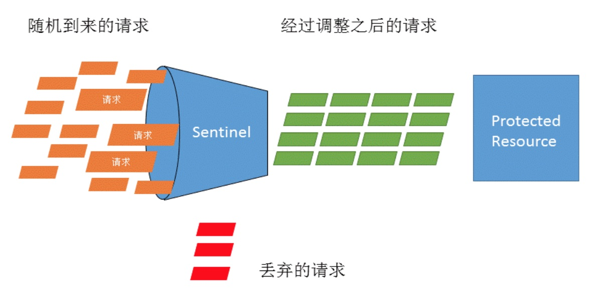
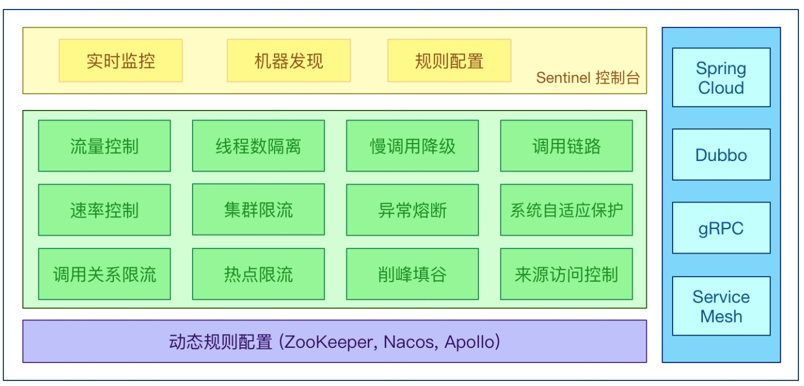
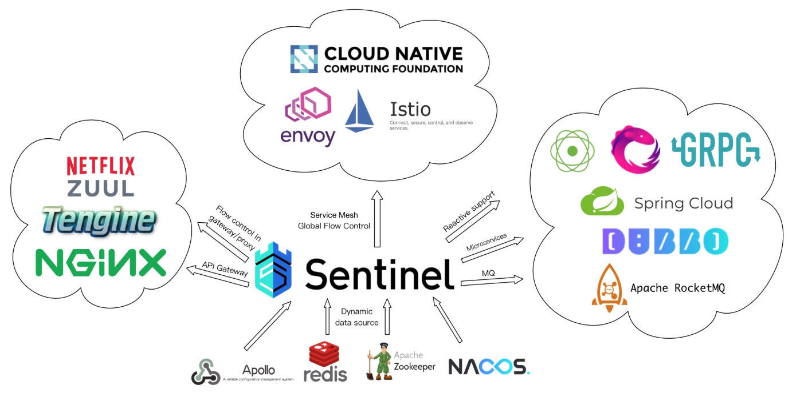
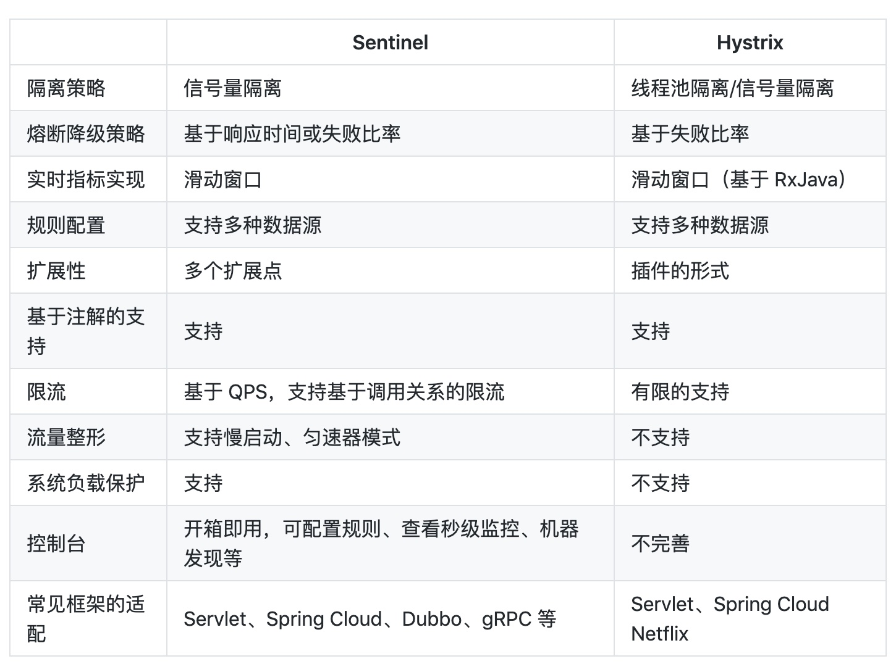

0 Sentinel 是什么
面向分布式服务架构的流量控制框架，主要包括流量控制、熔断降级、系统负载保护，目的是保证系统稳定性。
1 Sentinel 特性概览
Sentinel 的流量控制:
Sentinel 的主要特性:
Sentinel 的开源生态:
与hystrix的对比:
2 Sentinel 组成部分
Sentinel 分为两个部分:
- 核心库（Java 客户端）不依赖任何框架/库，能够运行于所有 Java 运行时环境。
1 | <dependency> |
引入上面包即可使用Sentinel的各项限流功能。
- 控制台（Dashboard），可以理解为单独的项目，作用是可视化查看
客户端(接入核心库的应用程序)的流控情况，并且可以在控制台上操作界面来动态设置客户端的流控参数。


3 Sentinel 核心概念
1. 资源
2. 规则
Sentinel 的工作流程大体分两步：
- 定义资源
- 定义资源流控规则
3.1 资源
所谓资源
- 从理念上它是被流控保护的对象
- 从编码上讲，它可以是一个方法，或方法体内的一段代码
只要有了资源，就可以定义各种流控规则。在编码的时候，只需要考虑某代码是否需要保护，如果需要保护，就可以将其定义为一个资源
3.1.1 定义资源方式
一共有5中定义资源的方式，文档链接：https://github.com/alibaba/Sentinel/wiki/如何使用#定义资源
1. 布尔类型定义资源
适用于定义代码片段的场景：
1 | // 资源名可使用任意有业务语义的字符串 |
2. 抛异常方式定义资源
1 | Entry entry = null; |
3. 注解方式定义资源
适用于将方法定义为资源的场景：
1 |
|
1 | // 流控处理方法 |
1 | // 异常处理方法 |
3.2 规则
规则即是对资源的一种限定，比如对资源进行流量的规则限制(例如QPS限制，线程数限制)；或者进行访问控制的限定(例如黑白名单)等等
Sentinel支持的规则包括流量控制规则、熔断降级规则、系统保护规则、来源访问控制规则 和 热点参数规则
在仅引入核心库的时候，操作步骤一般是：定义规则，加载规则
规则种类文档：https://github.com/alibaba/Sentinel/wiki/如何使用#规则的种类
3.2.1 流量控制规则 (FlowRule)
由访问资源的流量引发的控制规则，监控应用流量的 QPS 或并发线程数等指标，当达到指定的阈值时对流量进行控制
3.2.2 熔断降级规则 (DegradeRule)
从访问资源的RT和异常维度来进行控制，例如某资源的QPS很低，5分钟只有一个访问请求，但是RT非常高，此时即会触发熔断降级规则
3.2.3 系统保护规则 (SystemRule)
系统保护规则是应用整体维度的，而不是资源维度的，并且仅对入口流量生效。入口流量指的是进入应用的流(EntryType.IN)，比如 Web 服务或 Dubbo 服务端接收的请求，都属于入口流量。
系统规则支持四种阈值类型：
- Load（仅对 Linux/Unix-like 机器生效）：当系统 load1 超过阈值，且系统当前的并发线程数超过系统容量时才会触发系统保护。系统容量由系统的 maxQps * minRt 计算得出。设定参考值一般是 CPU cores * 2.5。
- RT：当单台机器上所有入口流量的平均 RT 达到阈值即触发系统保护，单位是毫秒。
- 线程数：当单台机器上所有入口流量的并发线程数达到阈值即触发系统保护。
- 入口 QPS：当单台机器上所有入口流量的 QPS 达到阈值即触发系统保护。
3.2.4 访问控制规则 (AuthorityRule)
又叫黑白名单控制。黑白名单根据资源的请求来源（origin）限制资源是否通过，若配置白名单则只有请求来源位于白名单内时才可通过；若配置黑名单则请求来源位于黑名单时不通过，其余的请求通过。
调用方信息通过 ContextUtil.enter(resourceName, origin) 方法中的 origin 参数传入
3.2.5 热点规则 (ParamFlowRule)
热点参数限流是一种特殊的流量控制，仅对包含热点参数的资源调用生效。
Sentinel 利用 LRU 统计最近最常访问的热点参数，结合令牌桶算法来进行参数级别的流控。
4 查询和更改规则
查询、更改规则，结合Sentinel的Dashboard会很方便。只通过核心包也可以完成查询、更改的目的，下面介绍通过核心库提供的接口如何查询、更改规则
4.1 查询规则
type取值对应第3小节各种规则类型：
1 | private static final String FLOW_RULE_TYPE = "flow"; |
4.2 更改规则
curl http://localhost:8719/setRules?type=
&data=
其中data 则是对应的规则的JSON格式数据
4.3 注意点
这里的8719只是默认端口，程序会根据当前系统可用端口进行调节。
com.alibaba.csp.sentinel.transport.command.SimpleHttpCommandCenter#getServerSocketFromBasePort
MAC平台可以使用 jps -l 先找到应用进程号，然后使用 lsof -nP -i | grep ${pid}找到相应的端口号即可。
Sentinel官方介绍文档：https://github.com/alibaba/Sentinel/wiki/介绍